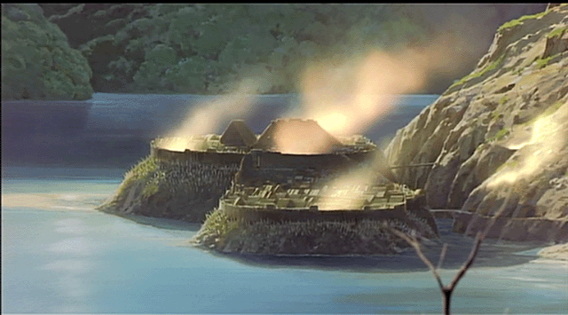

最近読んだ本：『図説 金の文化史』『人はどのように鉄を作ってきたか』『鉄を生みだした帝国』
公開日：
『図説 金の文化史』
貨幣を追ううちに、その素材であった金属にも興味が出た時期があって、その時に買い込んだまま積んであったのを読み終えた。
（ちなみに、この『銀の世界史』はイマイチだった）
これを読んだからと言って何か本質的な理解が進んだような気はまったくしないんだが*1、とにかく金に関する雑学が博覧強記な感じ。よくもまぁ、洋の東西を問わずいろいろ知ってんなーと思った*2。
図版もキレいで、本棚に並べてたまに眺めて遊ぶ本かな。読み終えた後、もう一回図版に目を通して、大まかにラインナップを再確認しておいた。他の本で言及されてた時に「どんなんだっけ」って振り替えられるように。

- 作者: レベッカゾラック,ジュニア,マイケル・W.フィリップス,Rebecca Zorach,Jr.,Michael W. Phillips,高尾菜つこ
- 出版社/メーカー: 原書房
- 発売日: 2016/11/11
- メディア: 単行本
- この商品を含むブログを見る
『人はどのように鉄を作ってきたか』
内容的にはこっちの方がだいぶ面白かった。あらかじめ期待して買ったわけではないが、たたら製鉄についてが大変詳しい（もちろん、ほかの製鉄方法についても詳しい）。

そもそも“たたら”って言われてももけもけ姫しか思いつかんのだけど……（ぉ
日本のたたら炉の立地条件は、原材料産地に近くて運搬の便が良く、賃米である米が安価であることである。
たたら製鉄では、「砂鉄七里に炭三里」と言われるように、かさ張る木炭の運搬が重要
鑪（たたら）炉自体は水、湿りを嫌うが、鑪場としては水が引きやすくかつその量も多い
一段と高い土地がよく、谷に鉄滓を捨てやすい場所がよい
水力を利用するために「製鐵場を選定すべき位置は水利の便あり」としている。
たたらに適している風を「かたい風」と言い、「湿気のない風、乾燥した風、冷たい風、谷の風」である。砂鉄の最終的水洗による比重選鉱を行い、水車動力を使うためには「水利の便」が重要であるが、堀江村下（註：引用論文の著者）はさらに炉の温度を上げるためには「乾燥した風」が重要
よく勉強して絵を作ってるんだな、とちょっと感心した。割とピッタリじゃない？（風についての描写はそれほどでもないかもだけど）
そもそも日本で“たたら”という独自の製鉄方法が発展したのは、大陸で採れる赤鉄鉱石が火山国ゆえ欠けており、砂鉄に頼らざるを得なかったかららしい。赤鉄鉱石は800度で還元するが、砂鉄は1000度を要する。その分、技術的なハードルは高かったが、“玉鋼”と呼ばれる優秀な鋼を得ることができた。
面白いのはスウェーデンでは湖の底から鉄鉱石が定期的に“沸く”らしい。スウェーデンは7世紀頃、すでに鉄をもたらす国「ヤンバラランド（Jarnbaraland）」と呼ばれており、農民が炉を構えて製鉄を行っていた。これは“たたら”と同様、近代製鉄に駆逐される19世紀辺りまで続いていたのだそうな。
あと、炭素含有量と硬さの関係は知ってた気がするけど、融点が変わるのは知らなかったかもしれない（多いほど融点は下がる。金属というのは不純物が含まれるとだいたい下がるっぽいけど、文系人間なのでよく知らん）。炭素をはじめ、混合によって性質が変わることは人間の歴史にとっていろいろ絶妙だったのがわかった。
面白かったので、鉄の性質と歴史は別の機会にまとめなおそうかと思う。
")
人はどのように鉄を作ってきたか 4000年の歴史と製鉄の原理 (ブルーバックス)
- 作者: 永田和宏
- 出版社/メーカー: 講談社
- 発売日: 2017/05/17
- メディア: 新書
- この商品を含むブログ (2件) を見る
『鉄を生みだした帝国』
『人はどのように鉄を作ってきたか』で興味をもったので取り寄せたけど、絶版っぽくて古本しかなかった。安かったからいいけど。
予想に反して物語チックだったけど、それはそれで面白い感じ。トルコ語がわかんない状態でアンカラの大学に飛び込み、ヒッタイト語と考古学を学びながら、製鉄のふるさとを見つける……みたいな。古代名の比定はツッコみ役の親友ならずとも「それでいいんかなー」と思わんでもないが、ロマン満載で楽しかった。鉄を生み出したプロト・ヒッタイトの人たちは、案外ヒッタイトに大事にされたのかもしれんな。
副次的作用として、アナトリアの地形がなんとなくわかるようになった。
")
鉄を生みだした帝国―ヒッタイト発掘 (NHKブックス 391)
- 作者: 大村幸弘
- 出版社/メーカー: NHK出版
- 発売日: 1981/01
- メディア: 単行本
- 購入: 1人 クリック: 5回
- この商品を含むブログ (2件) を見る